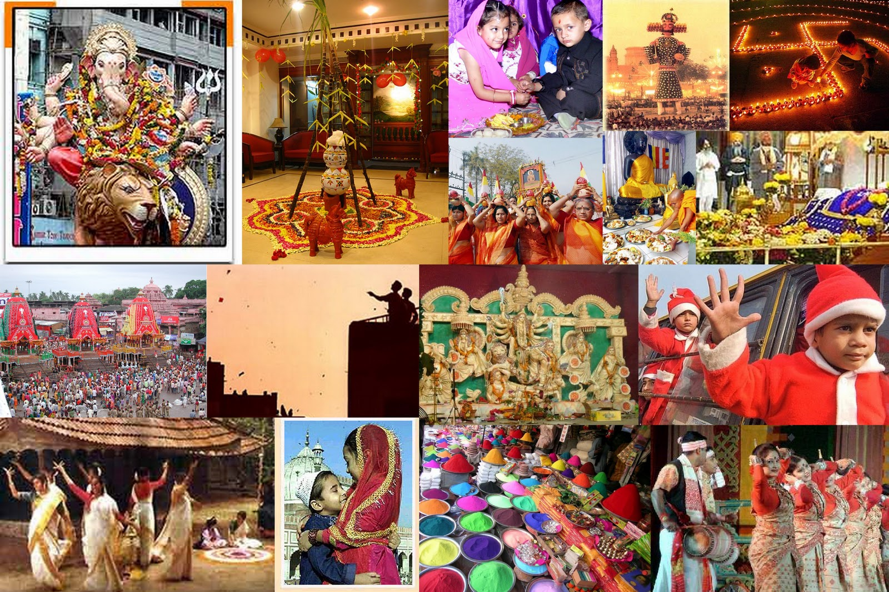

<link rel="stylesheet" href="home.css">

    <section class="home-section">
        <h2>Welcome to the Cultural Heritage </h2>
        <p>India’s cultural heritage is as diverse as its landscape, encompassing a rich tapestry of traditions, languages, art forms, and historical monuments. Our app aims to bridge the gap between people and this immense cultural wealth by offering an interactive and immersive experience.</p>
        
        <div class="interactive-gallery">
            <div class="gallery-item">
                
                <p>Explore ancient temples that stand as timeless testaments to India's architectural prowess.</p>
            </div>
            <div class="gallery-item">
                
                <p>Experience the vibrancy of traditional festivals that celebrate the essence of Indian culture.</p>
            </div>
            <div class="gallery-item">
                
                <p>Discover unique art forms and crafts that have been passed down through generations.</p>
            </div>
        </div>

        <p>Our app provides detailed information about these heritage sites and cultural practices, making it easier for users to appreciate and connect with India's rich history. By integrating interactive elements and beautiful imagery, we strive to make learning about Indian culture engaging and memorable.</p>
    </section>


    <footer>
        <p>&copy; 2024 Cultural Heritage of India. All rights reserved.</p>
    </footer>
</body>
</html>
